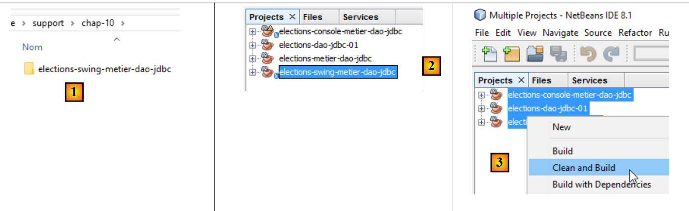
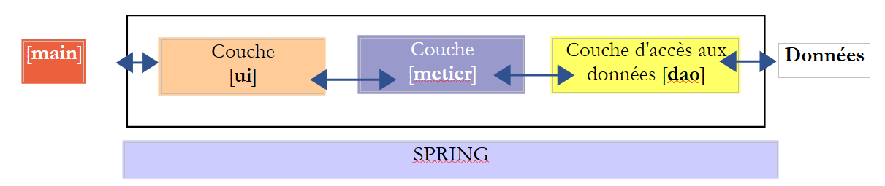
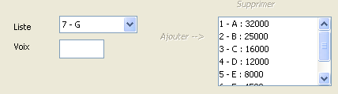
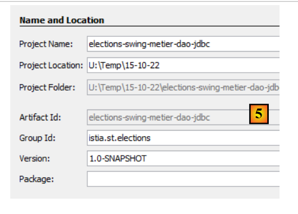
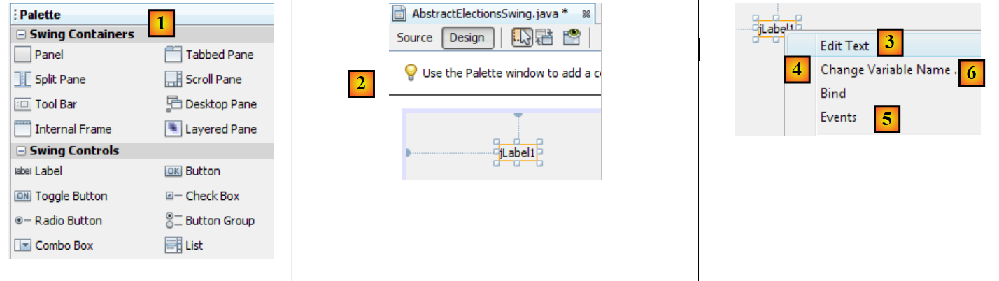
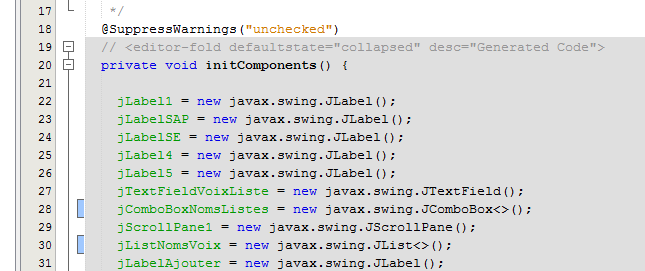
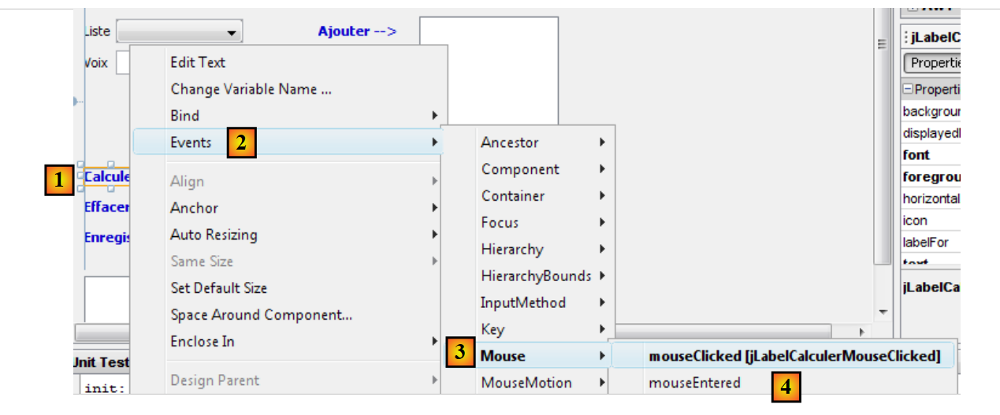
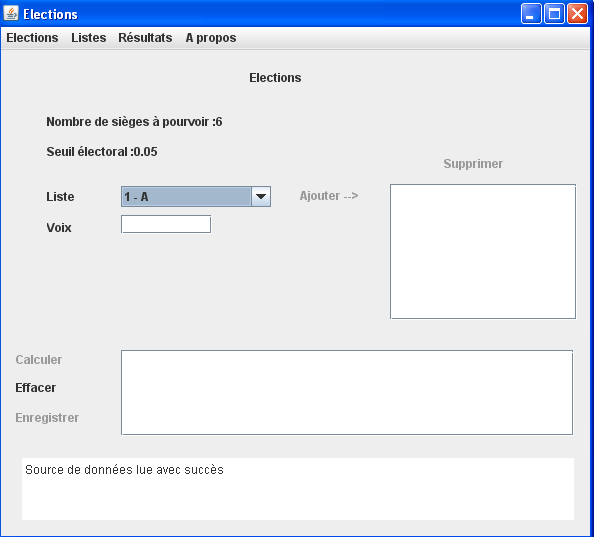

10. [الواجب]: تنفيذ طبقة [ui] باستخدام واجهة Swing -
الكلمات المفتاحية: بنية متعددة الطبقات، Spring، حقن التبعية، مكتبة مكونات Swing.
 |
10.1. الدعم
 |
في طبقة [UI]، نريد إنشاء واجهة مستخدم رسومية (GUI) باستخدام Swing. يوفر NetBeans أداة [Matisse] لإنشاء واجهات Swing هذه، وهي أداة تتفوق على ما يقدمه Eclipse. يتم استبدال واجهات Swing بشكل متزايد بواجهات JavaFX. يستخدم كل من NetBeans و Eclipse نفس الأداة لإنشاء هذه الأخيرة. لذلك، إذا قمنا بإنشاء واجهات JavaFX، فيمكننا استخدام Eclipse في جميع مراحل البنية الطبقية.
يمكن لـ NetBeans فتح أي مشروع Maven. لذلك سنستخدم مشروع Maven السابق ونضيف إليه واجهة Swing. في [2]، نقوم بتحميل (ملف / فتح مشروع) مشاريع Maven للطبقات الثلاث التي أنشأناها باستخدام Eclipse. ثم نقوم بإنشاء ملفاتها الثنائية [3]. تعمل خيارات [إنشاء] و[تنظيف وإنشاء] على إنشاء الملف الثنائي للمشروع الذي يتم تطبيقهما عليه. يتم وضع هذه الملفات الثنائية في مجلد [target] الخاص بالمشروع [4-5]:
 |
يحذف خيار [Clean] مجلد [target] هذا. أما خيار [Build] فيعيد بنائه. وتُظهر التجربة أنه عند ظهور مشاكل غير متوقعة، فإن أول ما يجب فعله هو تنفيذ [Clean and Build] على المشروع للتأكد من أنك تعمل مع أحدث إصدار. ويكون هذا ضروريًا بشكل خاص عندما يكون لديك ملفات تكوين لا تؤدي تعديلها إلى إعادة تجميع تلقائية عند تشغيل المشروع. يجب عليك بعد ذلك فرض إعادة التجميع هذه باستخدام [Clean and Build] حتى يتم تثبيت الإصدارات الجديدة في المجلد [target].
10.2. كيفية عمل التطبيق
لنعد إلى البنية العامة لتطبيق [Elections]:
 |
نحن نركز الآن على تنفيذ جديد لطبقة [ui]. التنفيذ الوحيد الموجود حاليًا هو واجهة وحدة التحكم. ونحن الآن بصدد إنشاء واجهة مستخدم رسومية.
سيكون لدى المستخدم الواجهة التالية للتفاعل مع تطبيق [Elections]:
 |
 |
تقع واجهة المستخدم الرسومية في الطبقة [ui]. وهذه الطبقة هي التي تتفاعل مع المستخدم.
- عند بدء التشغيل، يقوم تطبيق وحدة التحكم [main] بإنشاء مثيلات للطبقات الثلاث للتطبيق باستخدام Spring. ويتم ذلك قبل أن تظهر واجهة المستخدم الرسومية. وأيضًا خلال مرحلة التهيئة هذه، تُطلب المعلومات التي تميز الانتخابات (عدد المقاعد المطلوب شغلها، والعتبة الانتخابية، والقوائم المتنافسة) من طبقة [dao]. إذا فشلت مرحلة التهيئة هذه (على سبيل المثال، عدم القدرة على الوصول إلى البيانات)، يتم عرض رسالة خطأ على وحدة التحكم ولا يتم عرض واجهة المستخدم الرسومية.
- إذا تمت قراءة البيانات بنجاح، يتم عرض الواجهة الرسومية مع المعلومات التالية (انظر لقطة الشاشة أعلاه):
- عدد المقاعد المطلوب شغلها (2)
- الحد الأدنى للانتخاب الوارد في (3)
- أرقام الهوية وأسماء قوائم المرشحين في (4)
- ثم يقوم المستخدم بتخصيص عدد الأصوات لكل قائمة مرشحين باستخدام الحقول 4 (المعرف - الاسم)، و5 (الأصوات)، و6 (إضافة).

- يمكنك بعد ذلك استخدام الرابط (10) لحساب المقاعد:

- يتيح لك الرابط [حفظ] (12) حفظ النتائج في مصدر البيانات.
10.3. فئة [ElectionsSwing] التي تنفذ طبقة [ui]
10.3.1. مشروع NetBeans
ملاحظة: يشرح القسم 22.4 كيفية الحصول على NetBeans.
سيبدو مشروع NetBeans النهائي للتطبيق كما يلي [1]. قم بإنشائه باتباع الخطوات [2–5]:
 |
 |
تأكد من تكوين المشروع بحيث يتم تجميعه باستخدام JDK 1.8 [1-6]:
 |
10.3.2. تكوين Maven
سيعتمد المشروع الجديد [elections-swing-business-dao-jdbc] على المشروع السابق [elections-console-business-dao-jdbc]. للقيام بذلك، أضف تبعية Maven كما يلي [1-3]:
 |
 |
10.3.3. إنشاء واجهة المستخدم الرسومية
لإنشاء واجهة المستخدم الرسومية، يمكننا اتباع الخطوات التالية:
 |
 |
- [1]: أضف كائنًا إلى حزمة [elections.ui.service]
- [2]: حدد خيار [JFrame Form] في فئة [Swing GUI Forms]
 |
- [4]: قم بتسمية الفئة
- [5]: حزمة الفئة.
- أكمل المعالج.
- [6]: الفئة التي تم إنشاؤها
 |
- [7]: الفئة [AbstractElectionsSwing] في وضع [التصميم]
- [8]: علامة التبويب [Navigator] التي تعرض شجرة [9] لمكونات النافذة
- [10]: علامة التبويب [Properties]، التي تعرض خصائص مكون [JFrame] المحدد في [9]
 |
- [11]: [JFrame] هو حاوية مكونات. يمكن ترتيب المكونات داخل الحاوية وفقًا لقواعد تحديد المواقع المختلفة التي تسمى التخطيطات. هنا، نختار تخطيط [تصميم حر] [14]، الذي يسمح بوضع المكونات بحرية داخل الحاوية.
نجد المكونات في شريط الأدوات المسمى Palette:
 |
- [1]: لوحة الألوان
- [2]: يتم إسقاط مكون JLabel في حاوية المكونات
- بالنقر بزر الماوس الأيمن عليه، يمكننا الوصول إلى خصائص متنوعة: اسمه [4]، نصه [3]، أو معالجات الأحداث الخاصة به [5]. نستخدم [3] لتعيين النص [6].
 |
- [1]: تتيح علامة التبويب [الخصائص] في مكون [JLabel] الوصول إلى خصائصه: موضعه الأفقي [2]، وموضعه الرأسي [3]، وخط النص [4]، والنص [5].
عندما يتم سحب مكون وتهيئته على الواجهة الرسومية وتقوم بحفظ (Ctrl-S) عملك، يتم إنشاء كود في فئة [AbstractElectionsSwing]:
 |
 |
لا تقم بتعديل هذا الكود الذي يظهر باللون الرمادي، لأنه سيتم حذفه وإعادة إنشاؤه عند الحفظ التالي. وبالتالي، ستفقد أي تغييرات يتم إجراؤها.
يمكن العثور على دليل تعليمي حول إنشاء واجهة مستخدم رسومية باستخدام NetBeans على الرابط [https://netbeans.org/kb/docs/java/quickstart-gui.html?print=yes#design] (نوفمبر 2015).
سنقوم الآن بإنشاء الواجهة التالية:
 |
مكونات الواجهة هي كما يلي:
رقم | النوع | الاسم | الدور |
JMenuBar | jMenuBar1 | قائمة | |
JLabel | jLabelSAP | عدد المقاعد المتاحة | |
JLabel | jLabelSE | الحد الأدنى للانتخاب | |
JComboBox | jComboBoxListNames | قائمة بأسماء القوائم المتنافسة | |
JTextField | jTextFieldVotesList | عدد الأصوات التي حصلت عليها القائمة | |
JLabel | jLabelAdd | لإضافة قائمة إلى (8) | |
(JScrollPane، JList) | jListNamesVoices | أسماء وأصوات القوائم | |
JLabel | jLabelDelete | لإزالة (8) من القائمة المحددة في (8) | |
JLabel | jLabelCalculate | لحساب نتائج الانتخابات | |
JLabel | jLabelClear | لمسح نتائج الانتخابات | |
JLabel | jLabelSave | لحفظ نتائج الانتخابات | |
(JScrollPane، JList) | jListResults | لعرض نتائج الانتخابات | |
(JScrollPane، JTextPane) | jTextPaneMessages | لعرض رسائل المتابعة |
يُستخدم التعليق التوضيحي (JScrollPane، JList) [13-14] للإشارة إلى أنه عند سحب مكون [JList] وإفلاته داخل النافذة، يتم إدراجه تلقائيًا داخل مكون [JScrollPane] الذي يتيح التمرير عبر القائمة. إن مكون [JScrollPane] هو الذي يسمح لك بعرض جميع العناصر في القائمة، على الرغم من أن عددًا محدودًا منها فقط يكون مرئيًا في أي وقت معين. وينطبق الأمر نفسه على مكون [JTextPane] [15-16].
يمكن إنشاء القائمة على النحو التالي:
 |
- [1، 2]: يتم وضع مكون [شريط القوائم] في النافذة
- [3]: القائمة الافتراضية كما تظهر في علامة التبويب [المستكشف]
- [4، 5، 6]: بالنقر بزر الماوس الأيمن على خيار من القائمة، يمكنك:
- تغيير نصه [4]، واسمه [5]
- إدارة أحداثه [6]
- [7]: القائمة المطلوبة
القائمة المطلوبة هي كما يلي:
المستوى 1 | المستوى 2 |
الانتخابات | |
الخروج | |
القوائم | |
إضافة | |
حذف | |
النتائج | |
احسب | |
مسح | |
حفظ | |
حول |
يمكنك اختبار الواجهة الرسومية في أي وقت:
 |
عند إنشاء الواجهة، يجب عليك ربط معالج الأحداث ببعض العناوين والقوائم [إضافة، حذف، ...]. وإليك كيفية القيام بذلك:
 |
- [1]: انقر بزر الماوس الأيمن على المكون الذي تريد إدارة حدث له
- [2]: حدد الخيار [الأحداث]
- [3]: حدد فئة الحدث
- [4]: حدد الحدث الذي تريد التعامل معه
فيما يلي كود Java الذي تم إنشاؤه بواسطة هذه العملية:
jLabelCalculer.addMouseListener(new java.awt.event.MouseAdapter() {
public void mouseClicked(java.awt.event.MouseEvent evt) {
jLabelCalculerMouseClicked(evt);
}
});
...
private void jLabelCalculerMouseClicked(java.awt.event.MouseEvent evt) {
// TODO add your handling code here:
}
- الأسطر 1–5: تمت إضافة معالج أحداث إلى مكون jLabelCalculer. تتوقع طريقة addMouseListener كمعلمة فئة تنفذ واجهة MouseListener التالية:
 |
يتم تنفيذ واجهة MouseListener من خلال فئات مختلفة، بما في ذلك فئة MouseAdapter. تنفذ هذه الفئة الطرق الخمس الخاصة بواجهة MouseListener، لكن هذه الطرق لا تؤدي أي وظيفة. ولذلك، يجب عليك إنشاء فئة فرعية من هذه الفئة لتنفيذ الطريقة (الطرق) التي تختارها. وقد تم ذلك في الكود أعلاه، كما هو موضح أدناه:
jLabelCalculer.addMouseListener(new java.awt.event.MouseAdapter() {
public void mouseClicked(java.awt.event.MouseEvent evt) {
jLabelCalculerMouseClicked(evt);
}
});
يستخدم الكود أعلاه تقنية الفئة المجهولة الموضحة في القسم 2.5 من الدورة التدريبية [ref1].
في السطر 1، المعلمة الخاصة بالطريقة addMouseListener هي فئة مجهولة، يتم تعريفها على الفور. وهي مثيل لفئة مشتقة من فئة MouseAdapter (السطر 1)، والتي تم تجاوز طريقة mouseClicked الخاصة بها (الأسطر 2–4) بحيث تقوم بتنفيذ إجراء محدد.
يتم تعريف طريقة jLabelCalculerMouseClicked التي تم استدعاؤها في السطر 3 على النحو التالي:
private void jLabelCalculerMouseClicked(java.awt.event.MouseEvent evt) {
// TODO add your handling code here:
}
يقوم المطور بمعالجة حدث "MouseClicked" عن طريق وضع كود في هذه الطريقة.
يتم إنشاء جميع معالجات الأحداث بواسطة NetBeans بهذه الطريقة. يمكن للمطور تجاهل أسطر الكود التي أنشأتها NetBeans لربط طريقة بحدث أحد المكونات. يمكنه ببساطة وضع الكود الخاص به في السطر 2 أعلاه. فيما يلي مثال:
private void jLabelCalculerMouseClicked(java.awt.event.MouseEvent evt) {
System.out.println("Mouse Clicked");
}
إذا قمت بتشغيل واجهة المستخدم الرسومية (GUI) ونقرت على زر [Calculate]، فستظهر رسالة على وحدة التحكم:
 |
- [1]: انقر مرتين على العنصر [Calculate]
- [2]: تم تنفيذ معالج الحدث وأنتج رسائل mouseClicked في وحدة التحكم في NetBeans.
تم تعريف المكونات [jComboBoxNomsListes، jListNomsVoix، jListResultats] على النحو التالي:
protected javax.swing.JComboBox jComboBoxNomsListes;
protected javax.swing.JList jListNomsVoix;
protected javax.swing.JList jListResultats;
هذه المكونات هي قوائم يتم تكوينها عادةً بنوع T: نوع العناصر في النموذج الذي تعرضه المكونات. يمكن أن يكون هذا النوع T أي نوع. القيمة المعروضة في مكون القائمة هي من النوع [String]. بشكل افتراضي، يتم استخدام طريقة [T.toString()] للعرض. للتحكم بشكل أفضل في ما يتم عرضه، سيكون النوع T هو نوع String هنا. لذلك، فإن الإعلان الصحيح لقوائمنا هو كما يلي:
protected javax.swing.JComboBox<String> jComboBoxNomsListes;
protected javax.swing.JList<String> jListNomsVoix;
protected javax.swing.JList<String> jListResultats;
نحقق هذه النتيجة عن طريق تعديل إحدى خصائص المكون:
 |
10.3.4. فصل الكود
لنعد إلى بنية تطبيقنا:
 |
يجب أن تنفذ فئة [AbstractElectionsSwing] الطبقة [ui] أعلاه. لا يحتوي كودها، الذي تم إنشاؤه بواسطة NetBeans، حاليًا سوى على كود إدارة النوافذ ومعالجات الأحداث التي لا تقوم بأي شيء في هذه المرحلة. فيما سبق، نرى أن فئة [AbstractElectionsSwing] ستحتاج إلى معالجة التفاعلات مع طبقة [business]. ستتم هذه المعالجة في معالجات الأحداث. لتوضيح بنية الكود، قررنا وضعه في فئتين:
- [AbstractElectionsSwing]، والتي ستبقى كما تم إنشاؤها بواسطة NetBeans مع بعض التغييرات الطفيفة. لن تتعامل هذه الفئة مع أي أحداث بنفسها. ستكون معالجات الأحداث فارغة ومُعلنة على أنها مجردة. وسيتم تنفيذها بواسطة فئة مشتقة من [AbstractElectionsSwing].
- [ElectionsSwing]، وهي فئة مشتقة من [AbstractElectionsSwing] ستقوم بتنفيذ جميع معالجات الأحداث.
هذا النوع من الفصل ليس غير معتاد. يمكن العثور عليه، على سبيل المثال، في صفحات الويب ASP.NET (الإصدار غير MVC). يتطور مشروع NetBeans على النحو التالي:
 |
يتطور كود فئة [AbstractElectionsSwing] على النحو التالي:
public abstract class AbstractElectionsSwing {
....
private void jMenuItemCalculerActionPerformed(java.awt.event.ActionEvent evt) {
doCalculer();
}
...
private void jLabelCalculerMouseClicked(java.awt.event.MouseEvent evt) {
if (jLabelCalculer.isEnabled()) {
doCalculer();
}
}
....
// event managers
abstract protected void doSupprimer();
abstract protected void doCalculer();
abstract protected void doQuitter();
abstract protected void doEffacer();
abstract protected void doEnregistrer();
abstract protected void doAjouter();
abstract protected void doInformer();
abstract protected void doMajLabelAjouter();
abstract protected void doMajLabelSupprimer();
...
}
- السطر 1: تم إعلان الفئة على أنها مجردة
- الأسطر 3-5: معالجة النقر على خيار القائمة [jMenuItemCalculer]. نرى أن معالجة الحدث يتم تفويضها إلى طريقة doCalculer في السطر 19. هذه الطريقة غير مُنفذة ومُعلنة على أنها مجردة. سيتم تنفيذها بواسطة الفئة المشتقة [ElectionsSwing]؛
- الأسطر 9-13: معالج حدث النقر على التسمية [jLabelCalculer]. يؤدي النقر دائمًا إلى تشغيل حدث، سواء كان مكون [jLabel] نشطًا (enabled=true) أو غير نشط (enabled=false). هنا، نتأكد من أنه نشط بالفعل لمعالجة الحدث؛
- السطور 15 وما بعدها: يتم تطبيق هذه التقنية المتمثلة في تفويض معالجة الأحداث إلى طريقة مجردة على جميع معالجات الأحداث.
تنفذ الفئة [ElectionsSwing]، المشتقة من [AbstractElectionsSwing]، جميع معالجات الأحداث التي لم تنفذها [AbstractElectionsSwing]:
package elections.ui.service;;
...
public class ElectionsSwing extends AbstractElectionsSwing {
// event managers
@Override
protected void doInformer() {
...
}
@Override
protected void doAjouter() {
...
}
@Override
protected void doCalculer() {
...
}
@Override
protected void doEffacer() {
...
}
@Override
protected void doEnregistrer() {
...
}
@Override
protected void doQuitter() {
System.exit(0);
}
@Override
protected void doSupprimer() {
...
}
@Override
protected void doMajLabelAjouter() {
...
}
@Override
protected void doMajLabelSupprimer() {
...
}
}
- السطر 3: [ElectionsSwing] يمتد من [AbstractElectionsSwing]
- الأسطر 7–50: معالجات الأحداث للنافذة الرسومية
ستعمل أساليب الفئة المشتقة [ElectionsSwing] على معالجة مكونات الفئة الأصلية [AbstractElectionsSwing]. حاليًا، تتمتع هذه المكونات بنطاق خاص، مما يمنع الفئة الفرعية [ElectionsSwing] من الوصول إليها:
private JMenuItem jMenuItemAPropos = null;
private JLabel jLabelAjouter = null;
لحل هذه المشكلة، سنحرص على أن يكون نطاق مكونات واجهة المستخدم الرسومية [محمي]:
 |
- تعيين السمة [protected] في [3]؛
10.3.5. تنفيذ واجهة [IElectionsUI]
لنعد إلى بنية تطبيقنا:
 |
في الأعلى، يجب أن تقدم طبقة [ui] واجهة [IElectionsUI] إلى الكائن [main]:
package elections.ui.service;
public interface IElectionsUI {
/**
* lance le dialogue avec l'utilisateur
*/
public void run();
}
تم تعريف هذه الواجهة في مشروع [elections-console-metier-dao-jdbc] ووصفها في القسم 9.4. ونظرًا لأن هذا المشروع تابع لمشروع [swing]، فإن هذه الواجهة معروفة.
نظرًا لأن فئة [AbstractElectionsSwing] أصبحت فئة مجردة، لم يعد بإمكان Spring إنشاء مثيل لها. لذا، يجب الآن إنشاء مثيل لفئة [ElectionsSwing] بدلاً منها. ويجب أن تنفذ فئة [ElectionsSwing] واجهة [IElectionsUI]. وبالتالي، يتغير كودها على النحو التالي:
public class ElectionsSwing extends AbstractElectionsSwing implements IElectionsUI {
// interface [ElectionsUI] run method
public void run() {
...
}
- السطر 1: تنفذ فئة [ElectionsSwing] واجهة [IElectionsUI]
- الأسطر 4–6: طريقة [run] لهذه الواجهة
ما الذي يجب أن تفعله طريقة run؟ عرض نافذة واجهة المستخدم الرسومية. كيف نفعل ذلك؟ يمكننا استخدام طريقة [main] التي أنشأتها NetBeans في فئة [AbstractElectionsSwing] كدليل، وهي تقوم بالضبط بما نريده:
public static void main(String args[]) {
/* Set the Nimbus look and feel */
//<editor-fold defaultstate="collapsed" desc=" Look and feel setting code (optional) ">
/* If Nimbus (introduced in Java SE 6) is not available, stay with the default look and feel.
* For details see http://download.oracle.com/javase/tutorial/uiswing/lookandfeel/plaf.html
*/
try {
for (javax.swing.UIManager.LookAndFeelInfo info : javax.swing.UIManager.getInstalledLookAndFeels()) {
if ("Nimbus".equals(info.getName())) {
javax.swing.UIManager.setLookAndFeel(info.getClassName());
break;
}
}
} catch (ClassNotFoundException ex) {
java.util.logging.Logger.getLogger(NewJFrame.class.getName()).log(java.util.logging.Level.SEVERE, null, ex);
} catch (InstantiationException ex) {
java.util.logging.Logger.getLogger(NewJFrame.class.getName()).log(java.util.logging.Level.SEVERE, null, ex);
} catch (IllegalAccessException ex) {
java.util.logging.Logger.getLogger(NewJFrame.class.getName()).log(java.util.logging.Level.SEVERE, null, ex);
} catch (javax.swing.UnsupportedLookAndFeelException ex) {
java.util.logging.Logger.getLogger(NewJFrame.class.getName()).log(java.util.logging.Level.SEVERE, null, ex);
}
//</editor-fold>
/* Create and display the form */
java.awt.EventQueue.invokeLater(new Runnable() {
public void run() {
new NewJFrame().setVisible(true);
}
});
}
المُنشئ [AbstractElectionsSwing] المستخدم في السطر 28 هو كما يلي:
public AbstractElectionsSwing() {
initComponents();
}
- السطر 2: طريقة [initComponents] هي طريقة خاصة تم إنشاؤها بواسطة منشئ واجهة المستخدم الرسومية. لا يمكن تغيير كودها.
يمكن أن تكون طريقة [run] لفئة [ElectionsSwing] كما يلي:
@Override
public void run() {
// on affiche l'interface graphique
SwingUtilities.invokeLater(new Runnable() {
public void run() {
init();
setVisible(true);
}
});
}
- السطر 6: يتم تهيئة واجهة المستخدم الرسومية باستخدام طريقة [init]. هنا، نرغب في استدعاء طريقة [initComponents] الخاصة بالفئة الأم، ولكنها خاصة. لذلك نضيف طريقة [init] التالية إلى الفئة الأم [AbstractElectionsSwing]:
protected void init(){
initComponents();
}
- (تابع)
- نظرًا لوجودها في فئة [AbstractElectionsSwing]، فإن الطريقة [init] يمكنها الوصول إلى الطريقة الخاصة [initComponents] في نفس الفئة؛
- ولأنها تحمل السمة [protected]، فهي مرئية في الفئة الفرعية [ElectionsSwing]؛
- السطر 7: يتم إظهار واجهة المستخدم الرسومية؛
ملاحظة: بمجرد كتابة الطريقة [run] في الفئة [ElectionsSwing]، يمكن إزالة الطريقة [main] الخاصة بالفئة المجردة [AbstractElectionsSwing].
10.3.6. الفئة القابلة للتنفيذ
لنعد إلى بنية تطبيقنا:
 |
نود أن يقوم Spring بإنشاء مثيل لطبقة [ui] كما كان الحال عند تنفيذها بواسطة تطبيق وحدة التحكم. وللقيام بذلك، يجب أن تحتوي فئة التنفيذ [ElectionsSwing] على مرجع إلى طبقة [business]:
@Component
public class ElectionsSwing extends AbstractElectionsSwing implements IElectionsUI{
// reference on the [business] layer
@Autowired
private IElectionsMetier metier;
...
- السطر 1: فئة [ElectionsSwing] هي مكون Spring؛
- السطران 5-6: يقوم Spring بحقن مرجع في طبقة [business]؛
يتم تشغيل واجهة المستخدم الرسومية عن طريق تنفيذ فئة [BootElectionsSwing] التالية:
 |
package elections.ui.boot;
import elections.ui.service.IElectionsUI;
public class BootElectionsSwing extends AbstractBootElections {
public static void main(String[] arguments) {
new BootElectionsSwing().run();
}
@Override
protected IElectionsUI getUI() {
return ctx.getBean("electionsSwing", IElectionsUI.class);
}
}
لقد شرحنا كودًا مشابهًا في القسم 9.5 عند مناقشة كود فئتي [AbstractBootElections] و [BootElectionsConsole]. في السطر 12، نسترد الفاصوليا المسماة [electionsSwing]، والتي تتوافق مع الاسم القياسي لـ Spring لفئة [ElectionsSwing].
10.3.7. تهيئة واجهة المستخدم الرسومية
عند عرض واجهة المستخدم الرسومية، يتم تهيئة بعض مكوناتها:

كما هو موضح أعلاه:
- أن مربع القائمة المنسدلة قد تم ملؤه بأسماء القوائم؛
- أن عدد المقاعد المطلوب شغلها والحد الأدنى للانتخاب معروضان؛
- أن بعض الروابط قد تم تعطيلها؛
- يتم عرض رسالة نجاح في أسفل النافذة؛
متى ستتم عمليات التهيئة هذه؟ لا يمكن أن تحدث إلا بعد تهيئة حقل [electionsMetier] في فئة [ElectionsSwing]. وذلك لأن أسماء القوائم سيتم طلبها من طبقة [metier]. سيقوم Spring بتهيئة هذا الحقل بالترتيب التالي:
- باستخدام منشئ الفئة [ElectionsSwing] بدون معلمات؛
- حقن التبعيات، في هذه الحالة الإشارة إلى طبقة [business]؛
- تنفيذ طريقة [run] لفئة [ElectionsSwing]:
@Override
public void run() {
// on affiche l'interface graphique
SwingUtilities.invokeLater(new Runnable() {
public void run() {
init();
setVisible(true);
}
});
}
- في السطر 12، حددنا أننا سنستدعي طريقة [init] للفئة الأصلية، والتي ستقوم برسم مكونات واجهة المستخدم الرسومية. سنقوم بتجاوز هذه الطريقة محليًا في فئة [ElectionsSwing]. وداخل هذه الطريقة سنقوم هذه المرة بتهيئة مكونات النافذة (مربعات الاختيار، والتسميات) بالبيانات:
يمكن أن يكون للطريقة [init] المحلية الهيكل التالي:
public class ElectionsSwing extends AbstractElectionsSwing implements IElectionsUI {
...
// reference on the [business] layer
@Autowired
private IElectionsMetier metier;
// initializations
public void init() {
// generation of components by the parent class
super.init();
// lists are requested from the [metier] layer
...
// associate list names with the jComboBoxNomsListes combo
...
// and election parameters
...
// we initialize the labels linked to these two pieces of information
...
// message of success
...
// initialization status of certain components form
...
}
لاحظ، في السطر 11، استدعاء طريقة [init] للفئة الأصلية.
10.3.8. فئة [Utilities]
تم تجميع عدد من طرق المساعدة الثابتة معًا في فئة [Utilities]:
 |
فئة [Utilities] هي كما يلي:
package istia.st.elections.ui;
import javax.swing.JLabel;
import javax.swing.JMenuItem;
//utility class
class Utilitaires {
// manage label array status
public static void setEnabled(JLabel[] labels, boolean value) {
for (int i = 0; i < labels.length; i++) {
labels[i].setEnabled(value);
}
}
// manage the status of a table of menu options
public static void setEnabled(JMenuItem[] menuItems, boolean value) {
...
}
}
- السطر 9: تحدد طريقة setEnabled حالة مكونات JLabel المحددة في مصفوفة. تتيح لك طريقة setEnabled لمكون JLabel تمكين أو تعطيل JLabel.
المهمة: باتباع مثال طريقة <bdi dir="ltr" class="odt-ltr-term">setEnabled</bdi> في السطر 9، اكتب طريقة <bdi dir="ltr" class="odt-ltr-term">setEnabled</bdi> في السطر 16 التي تقوم بنفس الشيء مع مكونات *<bdi dir="ltr" class="odt-ltr-term">JMenuItem</bdi>*.
10.3.9. كود فئة [ElectionsSwing]
دعونا نستعرض الهيكل العام لفئة [ElectionsSwing]:
package istia.st.elections.ui;
...
public class ElectionsSwing extends AbstractElectionsSwing implements IElectionsUI {
// reference on the [business] layer
@Autowired
private IElectionsMetier metier;
// initializations
public void init() {
...
}
// event managers
@Override
protected void doInformer() {
...
}
@Override
protected void doAjouter() {
...
}
@Override
protected void doCalculer() {
...
}
@Override
protected void doEffacer() {
...
}
@Override
protected void doEnregistrer() {
...
}
@Override
protected void doQuitter() {
System.exit(0);
}
@Override
protected void doSupprimer() {
...
}
@Override
protected void doMajLabelAjouter() {
...
}
@Override
protected void doMajLabelSupprimer() {
...
}
}
سنقوم بفحص طرق الفئة واحدة تلو الأخرى.
10.3.9.1. طريقة [init]
لنعد إلى الواجهة الرسومية:
 |
تهدف طريقة [init] إلى ما يلي:
- ملء مربع القائمة المنسدلة [4] بمعرفات وأسماء القوائم بالصيغة [المعرف - الاسم]
- عرض رسالة نجاح في [15]
- تهيئة التسميات [2] و[3]
- تعطيل روابط معينة
يمكن أن يكون الهيكل الأساسي لطريقة [init] كما يلي:
@Override
protected void init() {
// génération des composants par la classe parent
super.init();
// initialisations locales
modèleNomsVoix = new DefaultListModel<>();
jListNomsVoix.setModel(modèleNomsVoix);
modèleRésultats = new DefaultListModel<>();
jListResultats.setModel(modèleRésultats);
String info;
try {
// on demande les listes à la couche [métier]
listes = ...
// on associe les noms des listes au combo jComboBoxNomsListes
...
// ainsi que les paramètres de l'election
int nbSiegesAPourvoir = ...
double seuilElectoral = ...
// on initialise les labels liés à ces deux informations
...
// message de succès
info = "Source de données lue avec succès";
} catch (ElectionsException ex1) {
// on note l'error
info = getInfoForException("Les erreurs suivantes se sont produites :", ex1);
} catch (RuntimeException ex2) {
// on note l'error
info = getInfoForException("Les erreurs suivantes se sont produites :", ex2);
}
// on affiche l'info
jTextPaneMessages.setText(info);
jTextPaneMessages.setCaretPosition(0);
// état formulaire
Utilitaires.setEnabled(new JLabel[] { jLabelAjouter, jLabelCalculer, jLabelEnregistrer, jLabelSupprimer }, false);
Utilitaires.setEnabled(
new JMenuItem[] { jMenuItemAjouter, jMenuItemCalculer, jMenuItemEnregistrer, jMenuItemSupprimer }, false);
// centrer la fenêtre
Dimension screenSize = Toolkit.getDefaultToolkit().getScreenSize();
Dimension frameSize = getSize();
if (frameSize.height > screenSize.height) {
frameSize.height = screenSize.height;
}
if (frameSize.width > screenSize.width) {
frameSize.width = screenSize.width;
}
setLocation((screenSize.width - frameSize.width) / 2, (screenSize.height - frameSize.height) / 2);
}
private String getInfoForException(String message, ElectionsException ex) {
// on affiche le message
StringBuffer info = new StringBuffer(String.format("%s -------------\n", message));
info.append(String.format("Code erreur : %d\n", ex.getCode()));
// on affiche les erreurs
for (String erreur : ex.getErreurs()) {
info.append(String.format("-- %s\n", erreur));
}
return info.toString();
}
private String getInfoForException(String message, RuntimeException ex) {
// on affiche le message
StringBuffer info = new StringBuffer(String.format("%s -------------\n", message));
// on affiche la pile des exceptions
Throwable cause = ex;
while (cause != null) {
info.append(String.format("-- %s\n", cause.getMessage()));
cause = cause.getCause();
}
return info.toString();
}
المهمة: أكمل الكود الخاص بالطريقة [init].
اقرأ في الدورة التدريبية: مكونات JTextField و JLabel
ملاحظة:
يعرض مكون JList البيانات الموجودة في نموذج. بشكل افتراضي، يكون هذا النموذج من النوع DefaultListModel (السطران 2 و3). يتصرف كائن DefaultListModel بشكل مشابه إلى حد ما لـ ArrayList:
- لإضافة كائن o إلى النموذج:
[DefaultListModel].addElement(Object o);
في هذا التطبيق، سيكون الكائن o دائمًا من النوع String.
- لإزالة العنصر i من النموذج:
[DefaultListModel].remove(int i);
- لاسترداد العنصر i من النموذج:
[DefaultListModel].elementAt(int i);
لإضافة عنصر إلى مربع القائمة المنسدلة [jComboBoxNomsListes]، استخدم طريقة [addItem]:
jComboBoxNomsListes.addItem(chaîne de caractères)
يحتوي مكون JTextPane على طريقتي getText() و setText() لقراءة/كتابة النص المعروض.
10.3.9.2. إدارة حالة رابط [Add]
لا يكون الزر [Add] [6] نشطًا إلا عندما يكون الحقل [5] المخصص للتصويت غير فارغ. في فئة [AbstractElectionsSwing]، يكون المعالج الذي يتتبع حركات المؤشر في الحقل [5] كما يلي:
private void jTextFieldVoixListeCaretUpdate(javax.swing.event.CaretEvent evt) {
doMajLabelAjouter()
}
السطر 2 يستدعي طريقة [doMajLabelAjouter] الخاصة بفئة [ElectionsSwing].
protected void doMajLabelAjouter() {
// on fixe l'état du label [jLabelAjouter]
...
// on fixe l'état du menu [jMenuItemAjouter]
...
}
المهمة: أكمل كود الأسلوب [doMajLabelAjouter].
10.3.9.3. تخصيص الأصوات لكل قائمة
بالنسبة لكل قائمة مرشحين من (4)، اتبع الخطوات التالية:
- اختر قائمة من (4)
- أدخل عدد الأصوات في (5)
- قم بالتأكيد بالنقر على رابط [Add]
يتم الإبلاغ عن أخطاء الإدخال كما هو موضح في المثال التالي:

إذا كان عدد الأصوات صحيحًا، تتم إضافة القائمة إلى المكون (8)، ويتم مسح عدد الأصوات، ويتم تعطيل رابط [إضافة]:
 |  |
في فئة [AbstractElectionsSwing]، يكون المعالج الذي يتعامل مع النقر على رابط [إضافة] كما يلي:
private void jLabelAjouterMouseClicked(java.awt.event.MouseEvent evt) {
if (jLabelAjouter.isEnabled()) {
doAjouter();
}
}
السطر 3 يستدعي طريقة [doAjouter] الخاصة بفئة [ElectionsSwing]:
// modèles des listes JList
private DefaultListModel<String> modèleNomsVoix = null;
private DefaultListModel<String> modèleRésultats = null;
// les listes en compétition
private ListeElectorale[] listes;
// listes saisies par l'user
private final List<ListeElectorale> listesSaisies = new ArrayList<>();
private ListeElectorale[] tListesSaisies;
...
@Override
protected void doAjouter() {
// le nombre de voix est-il correct ?
...
// si erreur, alors on la signale
if (erreur) {
JOptionPane.showMessageDialog(null, "Nombre de voix incorrect", "Elections : erreur",
JOptionPane.INFORMATION_MESSAGE);
jTextFieldVoixListe.requestFocus();
// retour à l'graphic interface
return;
}
// pas d'error - save the list
listesSaisies.add(...);
modèleNomsVoix.addElement(...);
// on nettoie le nombre de voix
jTextFieldVoixListe.setText("");
// état formulaire (menus, labels)
...
}
- السطر 25: في كل مرة يضيف فيها المستخدم أصواتًا إلى قائمة ويؤكد اختياره، يتم تخزين هذه القائمة في حقل [listesSaisies] في السطر 9. يتم حفظ القائمة هناك مع المعلومات [id، version، name، voice]. تأتي المعلومات الثلاثة الأولى من القوائم المخزنة مبدئيًا في المصفوفة في السطر 6. تُرجع طريقة [getSelectedIndex] لمربع القائمة المنسدلة مؤشر القائمة المحددة؛
المهمة: أكمل كود الدالة [doAjouter].
10.3.9.4. إدارة حالة رابط [Delete]
لا يكون رابط [Delete] [9] نشطًا إلا عند تحديد عنصر في [8].
في فئة [AbstractElectionsSwing]، يكون المعالج الذي يستجيب للنقر على عنصر في القائمة [8] كما يلي:
private void jListNomsVoixValueChanged(javax.swing.event.ListSelectionEvent evt) {
doMajLabelSupprimer();
}
السطر 2 يستدعي طريقة [doMajLabelSupprimer] الخاصة بفئة [ElectionsSwing].
@Override
protected void doMajLabelSupprimer() {
// on allume le label [jLabelSupprimer] et l'corresponding menu option
...
}
المهمة: أكمل كود الأسلوب [doMajLabelSupprimer].
10.3.9.5. حذف قائمة المرشحين
يتيح لك الرابط [حذف] [9] حذف الزوج (الاسم، التصويت) المحدد في (8). بمجرد اكتمال الحذف، يتم تعطيل الرابط [حذف]. ولن يتم تمكينه مرة أخرى إلا عند تحديد قائمة جديدة في (8).
 |  |
في فئة [AbstractElectionsSwing]، يكون المعالج الذي يستجيب للنقر على رابط [حذف] كما يلي:
private void jLabelSupprimerMouseClicked(java.awt.event.MouseEvent evt) {
if(jLabelSupprimer.isEnabled()){
doSupprimer();
}
}
السطر 3 يستدعي طريقة [doSupprimer] الخاصة بفئة [ElectionsSwing].
@Override
protected void doSupprimer() {
// suppression de la liste sélectionnée, du modèle modèleNomsVoix et des listes saisies
...
// maj de l'status of labels and form menu options
Utilitaires.setEnabled(...);
...
}
المهمة المطلوبة: أكمل كود طريقة [doSupprimer].
10.3.9.6. إدارة حالة رابط [Calculate]
لا يكون الرابط [Calculate] [10] نشطًا إلا عندما يكون هناك عنصر واحد على الأقل في [8].
المهمة: أضف الكود اللازم للتعامل مع هذا الرابط في طريقتي [doAdd] و [doDelete] المكتوبتين سابقًا. سيتم أيضًا التعامل مع خيار القائمة المقابل.
ملاحظة: يتم الحصول على عدد العناصر في DefaultListModel باستخدام طريقة size().
10.3.9.7. حساب المقاعد
يتيح لك الرابط [حساب] [10] بدء عملية حساب المقاعد وعرض النتائج في (14). إذا فشل الحساب (تم استبعاد جميع القوائم)، تظهر رسالة خطأ في [15]. وفي جميع الأحوال، يتم تعطيل الرابط [حساب] [10] بعد إتمام الحساب.
في فئة [AbstractElectionsSwing]، يكون المعالج الذي يستجيب للنقر على رابط [حساب] كما يلي:
private void jLabelCalculerMouseClicked(java.awt.event.MouseEvent evt) {
if(jLabelCalculer.isEnabled()){
doCalculer();
}
}
السطر 3 يستدعي طريقة [doCalculer] الخاصة بفئة [ElectionsSwing].
// listes saisies par l'utilisateur
private final List<ListeElectorale> listesSaisies = new ArrayList<>();
private ListeElectorale[] tListesSaisies;
...
@Override
protected void doCalculer() {
tListesSaisies = listesSaisies.toArray(new ListeElectorale[0]);
// calcul des sièges
try {
...
} catch (ElectionsException ex) {
// on affiche l'exception
...
return;
}
// affichage des résultats
...
// maj état formulaire
Utilitaires.setEnabled(...);
}
المهمة: أكمل كود طريقة [doCalculer].
10.3.9.8. حفظ النتائج في مصدر البيانات
يتيح لك الرابط [Save] (12) حفظ نتائج حساب المقاعد في مصدر البيانات. بمجرد نجاح عملية الحفظ، يتم تعطيل الرابط [Save]. إذا فشلت عملية الحفظ، يتم عرض رسالة خطأ في [15]. في كلتا الحالتين، يتم تعطيل الرابط [Save].
في فئة [AbstractElectionsSwing]، يكون المعالج الذي يدير النقر على التسمية [Save] كما يلي:
private void jLabelEnregistrerMouseClicked(java.awt.event.MouseEvent evt) {
if(jLabelEnregistrer.isEnabled()){
doEnregistrer();
}
}
السطر 3 يستدعي طريقة [doEnregistrer] الخاصة بفئة [ElectionsSwing]:
@Override
protected void doEnregistrer() {
// on demande l'enregistrement à la couche métier
try {
...
} catch (ElectionsException ex) {
// on affiche l'exception
...
// retour à l'interface graphique
return;
}
// maj du formulaire
Utilitaires.setEnabled(...);
...
}
المهمة: أكمل الكود الخاص بالطريقة [doEnregistrer].
10.3.9.9. مسح النتائج
رابط [مسح] (11) يمسح النتائج المعروضة في (14).
في فئة [AbstractElectionsSwing]، يكون المعالج الذي يدير النقر على التسمية [Clear] كما يلي:
private void jLabelEffacerMouseClicked(java.awt.event.MouseEvent evt) {
if(jLabelEffacer.isEnabled()){
doEffacer();
}
}
السطر 3 يستدعي طريقة [doEffacer] الخاصة بفئة [ElectionsSwing]:
@Override
protected void doEffacer() {
// on vide la liste des résultats
....
// maj du formulaire
Utilitaires.setEnabled(...);
}
المهمة: أكمل الكود الخاص بالطريقة [doEffacer].
ملاحظة: تحتوي فئة DefaultListModel على طريقة clear() تقوم بإزالة جميع عناصرها.
10.3.10. التحسينات
يمكن تحسين الواجهة الرسومية السابقة بعدة طرق: فقد ينسى المستخدم إدخال الأصوات لجميع القوائم الموجودة في مربع القائمة المنسدلة، وقد يدخل أيضًا عن طريق الخطأ الأصوات لنفس القائمة عدة مرات.
المهمة: قم بتحسين الخوارزمية بحيث لا تحدث أي من هاتين الحالتين. أحد الحلول البسيطة هو الاحتفاظ بقاموس للقوائم التي تم إدخالها، حيث تكون المفاتيح هي عناصر مربع القائمة المنسدلة. سنحرص أيضًا على أن يكون زر [Calculate] نشطًا فقط عندما يتم إدخال جميع القوائم.
انظر الدورة التدريبية [ref1]: فئة HashTable في القسم 3.8.